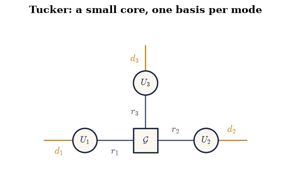
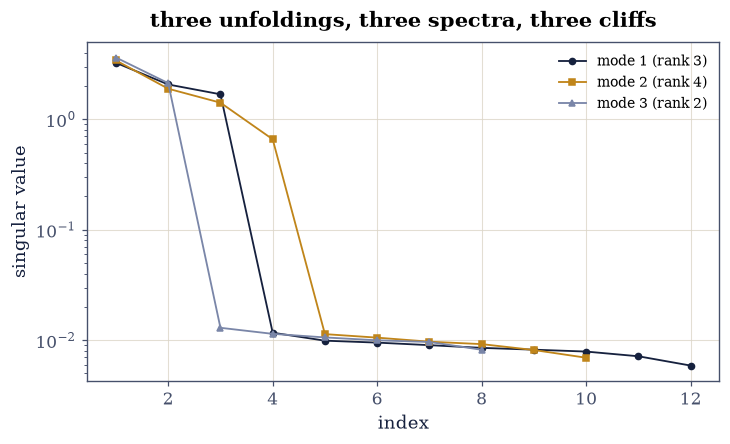
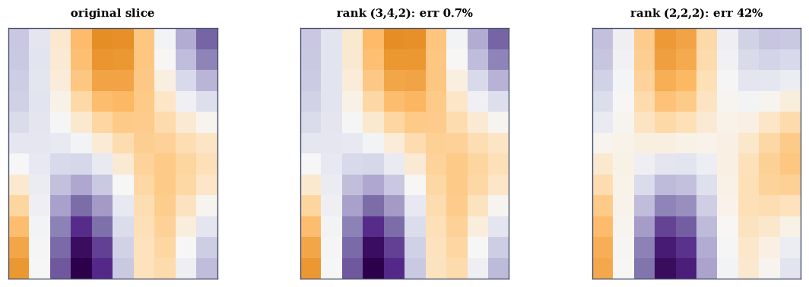
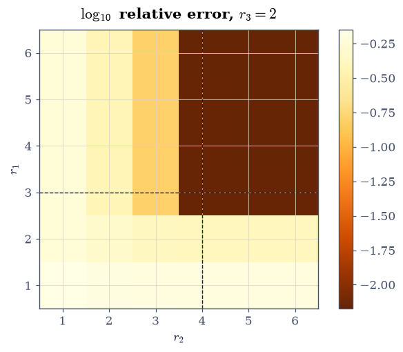

7.2 Tensors, Unfoldings, and the Tucker/HOSVD Decompositions#
Notebook overview#
§7.1 gave tensors a language; this notebook
gives them a decomposition. The bridge is the mode-\(n\) unfolding —
reshape the 3-way array into a matrix by making one index the rows —
written by hand here (np.moveaxis plus reshape, gated to round-trip
exactly, since reshapes move no numbers). Unfoldings make the
multilinear rank three ordinary matrix ranks, and they make the
mode product ordinary matrix multiplication, whose commutation
across distinct modes is gated at \(10^{-12}\) scaled.
Then Chapter IV returns in triplicate. The HOSVD [DLDMV00] runs one SVD per unfolding: orthonormal factors (gated \(10^{-13}\)), a core with the SVD’s all-orthogonality inherited in every mode (gated), and exact reconstruction at full multilinear rank. Truncation is where tensors part company with matrices: cutting each mode’s basis separately is not optimal — no Eckart–Young holds — but the quasi-optimality theorem bounds the loss at \(\sqrt{3}\) of the best possible, and the measurement shows both regimes: at the planted ranks \((3,4,2)\) the alternating HOOI iteration cannot improve on HOSVD at all (ratio 1.0000 — the structure is recovered outright), while at the harsh ranks \((2,2,2)\) HOOI’s provably monotone sweeps beat truncated HOSVD by 16%, comfortably inside the \(\sqrt{3} = 1.73\) ceiling. A \(960\)-entry tensor rides home in \(116\) numbers — the compression ledger, counted — and the error surface over the whole multilinear-rank grid is drawn as the price list it is.
How to read a check. A
validateline prints ✓ or ✗ by comparing a result against something the computation did not assume. A ✗ flags a mismatch to investigate, never a verdict on its own.
Theory in brief#
Unfoldings: three ways to be a matrix#
For \(\mathcal{T} \in \mathbb{R}^{d_1\times d_2\times d_3}\) the mode-\(n\) unfolding \(T_{(n)}\) makes index \(n\) the rows and flattens the rest:
and the mode product \(\mathcal{T}\times_n A\) is \(A\,T_{(n)}\) refolded. Products along different modes commute; along the same mode they compose: \((\mathcal{T}\times_n A)\times_n B = \mathcal{T}\times_n(BA)\).
Tucker and HOSVD#
The Tucker form is a small core lit by one basis per mode,
and the HOSVD chooses \(U_n\) as the left singular vectors of \(T_{(n)}\): three matrix SVDs, no iteration. The core \(\mathcal{G} = \mathcal{T}\times_1 U_1^{\top}\times_2 U_2^{\top} \times_3 U_3^{\top}\) then inherits all-orthogonality — its slices along each mode are mutually orthogonal, the tensor echo of the SVD’s diagonal \(\Sigma\).
Truncation, and the theorem with a constant in it#
Keeping \(r_n\) columns per mode is not the best rank-\((r_1,r_2,r_3)\) approximation — Eckart–Young does not survive the third index. What survives is quasi-optimality,
and HOOI — alternating: fix two bases, optimize the third by an SVD of the partially projected tensor — descends monotonically from the HOSVD start toward a local optimum. Since \(\lVert\mathcal{T}-\mathcal{T}_{\text{best}}\rVert \le \lVert\mathcal{T}-\widehat{\mathcal{T}}_{\text{HOOI}}\rVert\), the computable form of Eq. 274 — HOSVD error at most \(\sqrt3\,\times\) HOOI error — is gateable one-sidedly, and is.
Setup#
Data only: the dimensions, the smooth cosine factors, and the planted working tensor (assembled with the einsum sentence of §7.1). unfold/fold are built in Exercise 1, the mode product in Exercise 2.
The Setup below holds this notebook’s data and instruments — nothing you are asked to build. It is collapsed so the building stays yours; expand it whenever you want the details.
Exercise 1: Unfoldings: written by hand, gated exactly#
Part a) Write unfold(T, mode) and fold(M, mode, shape) with
np.moveaxis and reshape — and derive what they do on the
\(2\times3\times2\) counting tensor (entries \(1\dots12\)): print all three
unfoldings and check the first row of \(T_{(1)}\) by eye against the
definition.
Write this one yourself — every later formula calls it.
Part b) Gate the round trips exactly: fold(unfold(T, m), m)
returns the working tensor bit for bit for every mode — reshapes and
axis moves copy numbers, they never compute
(§5.3’s format rule, one
dimension up).
Part c) The multilinear rank from Eq. 272: on the
noise-free planted tensor, gate
np.linalg.matrix_rank of the three unfoldings equal to \((3, 4, 2)\) —
integer ranks with \(O(1)\) spectral gaps, safely countable.
mode-1 unfolding, shape (2, 6):
[[ 1 2 3 4 5 6]
[ 7 8 9 10 11 12]]
mode-2 unfolding, shape (3, 4):
[[ 1 2 7 8]
[ 3 4 9 10]
[ 5 6 11 12]]
mode-3 unfolding, shape (2, 6):
[[ 1 3 5 7 9 11]
[ 2 4 6 8 10 12]]
round trips exact in all three modes: True
multilinear rank of the noise-free tensor: (3, 4, 2) (planted (3, 4, 2))
Validation 1#
✓ unfold and fold are exact inverses, bitwise (Eq. 1) [moveaxis and reshape copy numbers without arithmetic — the format rule of 5.3, one dimension up]
✓ and the multilinear rank is three matrix ranks, counted [(3, 4, 2) from the three unfoldings of the noise-free tensor: integer ranks over O(1) spectral gaps]
True
Exercise 2: Mode products, and the algebra they obey#
Part a) Write mode_prod(T, A, mode) — multiply the unfolding,
refold — every Tucker formula below calls it. Then gate the commutation
of Eq. 272’s product across
distinct modes at \(10^{-12}\) scaled:
\((\mathcal{T}\times_1 A)\times_2 B = (\mathcal{T}\times_2 B)\times_1 A\)
on random \(5\times12\) and \(6\times10\) factors.
Part b) Gate the same-mode composition: \((\mathcal{T}\times_1 A)\times_1 C = \mathcal{T}\times_1 (CA)\) — order matters within a mode exactly as matrix multiplication demands.
Part c) Connect to §7.1: the mode-1
product is the einsum sentence "abc,ia->ibc" — gate the two
spellings against each other, and note the unfolding is only a
storage choice; the contraction is the mathematics.
distinct-mode commutation: 1.8e-16
same-mode composition: 1.9e-16
mode product vs einsum sentence: 2.5e-16
Validation 2#
✓ mode products commute across modes and compose within one [2e-16 and 2e-16: the two identities every Tucker manipulation silently uses]
✓ and the mode product is one einsum sentence [abc,ia->ibc — the unfolding is a storage choice; the contraction is the mathematics (7.1's grammar) [2.498e-16 < 1e-12]]
True
Exercise 3: HOSVD: Chapter IV, three times#
Part a) Write hosvd(T, ranks=None): one
np.linalg.svd(unfold(T, m)) per mode for the factors, then the core
by three transposed mode products. Gate factor orthonormality at
\(10^{-13}\) (each \(U_n^{\top}U_n = I\)).
Part b) Gate exactness at full multilinear rank: reconstructing from the full core and factors returns the working tensor to \(10^{-12}\) relative — three orthogonal changes of basis and back.
Part c) Gate the core’s all-orthogonality at \(10^{-11}\) scaled: for each mode, \(G_{(m)}G_{(m)}^{\top}\) is diagonal — the slices of the core along every mode are mutually orthogonal, \(\Sigma\)’s diagonality echoed three ways. (Its diagonal entries are the squared mode-\(m\) singular values — print them and watch Exercise 4’s spectra appear.)
Part d) Draw the Tucker diagram: a square core node with three factor nodes on its legs, each carrying one free index — the picture of Eq. 273, in the notation §7.1 introduced.
factor orthonormality, worst mode: 1.3e-15
full-rank reconstruction: 1.4e-15 relative
mode-1 core Gram diagonal (= squared singular values): [1.0511e+01 4.2588e+00 2.8292e+00 1.0000e-04 1.0000e-04] ...
core all-orthogonality, worst off-diagonal: 2.3e-16 (relative to ||T||^2)

Fig. 134 The Tucker decomposition of Eq. 2 as a tensor diagram: a three-legged core \(\mathcal{G}\) (square – it is small, \(3\times4\times2\) here) contracted with one orthonormal factor per mode, each factor carrying one free leg out to the full dimensions 12, 10, 8. Counting dangling legs: three, so the network IS a 3-way tensor – 960 entries represented by 24 core numbers and three thin factors. The HOSVD fills this picture with 7.1’s grammar: each factor from one SVD of one unfolding, the core from three transposed mode products.#
Validation 3#
✓ the HOSVD factors are orthonormal in every mode [three SVDs, three orthonormal bases — Chapter IV's guarantee, thrice [1.33227e-15 < 1e-13]]
✓ full-rank HOSVD reconstructs the tensor exactly (Eq. 2) [1e-15 relative: three orthogonal changes of basis and back, rounding only]
✓ and the core is all-orthogonal: Sigma's diagonality, echoed per mode [worst off-diagonal of any G_(m) G_(m)' at 2e-16 of ||T||^2 — with the diagonals the squared mode singular values]
True
Exercise 4: The three spectra, and the ranks they advertise#
Part a) Compute the singular values of the three unfoldings and draw them on one log axis: each mode’s spectrum falls off a cliff at its planted rank — after 3, 4 and 2 values respectively — onto a noise shelf near \(10^{-3}\).
Part b) Gate the cliffs as ratios (safe, per the course’s rules on counting versus thresholding): for each mode, \(\sigma_{r}/\sigma_{r+1} > 30\) at the planted \(r\), while \(\sigma_1/\sigma_r < 30\) — the gap is at the advertised position and nowhere before it.
mode 1: sigma_3/sigma_4 = 144, sigma_1/sigma_3 = 1.9
mode 2: sigma_4/sigma_5 = 58, sigma_1/sigma_4 = 5.2
mode 3: sigma_2/sigma_3 = 164, sigma_1/sigma_2 = 1.7

Fig. 135 Singular values of the three unfoldings on one log axis. Each mode’s spectrum falls off a cliff at its planted multilinear rank – after 3 values (mode 1), 4 (mode 2), 2 (mode 3) – onto the shared noise shelf near \(10^{-3}\). The multilinear rank of Eq. 1 is literally three matrix ranks, and these are their pictures; the cliffs are gated as ratios at the advertised positions rather than by counting values above a threshold, which 5.3’s lessons showed to be machine-dependent.#
Validation 4#
✓ each unfolding's spectrum cliffs exactly at its planted rank [gap ratios above 30 at the advertised position, below 30 before it — ratios, not threshold counts, per the reproducibility lessons]
True
Exercise 5: Truncation: the theorem with \(\sqrt{3}\) in it#
Part a) Truncated HOSVD at the planted ranks \((3,4,2)\): relative error \(7\times10^{-3}\) — the noise floor, since the planted structure is exactly recoverable. Run HOOI (write-yourself: fix two factors, project, SVD the third’s unfolding; sweep eight times) from the HOSVD start: gate its error monotonically non-increasing (a theorem — alternating maximization never backtracks) and its final error \(\le\) HOSVD’s plus rounding: here the ratio is 1.0000, because at the true ranks there is nothing left to improve.
Part b) The regime with daylight: harsh ranks \((2,2,2)\). Truncated HOSVD: 0.494. HOOI: 0.425 — a 16% improvement, and the quasi-optimality gate Eq. 274 in its computable form: HOSVD error \(\le \sqrt{3}\times\) HOOI error (measured ratio 1.16 against the ceiling 1.73). Both regimes gated; the pair is the lesson — HOSVD is cheap and near-optimal when the ranks are honest, and HOOI buys real accuracy only when truncation actually bites.
Part c) The compression ledger, counted: \((3,4,2)\) Tucker storage is \(24 + 36 + 40 + 16 = 116\) numbers against \(960\) — a factor 8.3 at the noise floor.
Part d) Draw a mode-3 slice of the original beside its \((3,4,2)\) and \((2,2,2)\) reconstructions: visually identical at the honest ranks, visibly smoothed at the harsh ones — the error numbers, as pictures.
honest ranks (3, 4, 2): HOSVD 0.006932, HOOI 0.006932 (ratio 1.0000), monotone True
harsh ranks (2, 2, 2): HOSVD 0.4941, HOOI 0.4247 (ratio 1.1632 vs sqrt(3) = 1.732), monotone True
compression: 116 numbers vs 960 (8.3x) at the noise floor

Fig. 136 One mode-3 slice of the working tensor (left), its rank-\((3,4,2)\) Tucker reconstruction (centre), and its rank-\((2,2,2)\) one (right), on a shared colour scale. At the honest ranks the reconstruction is visually identical – the 0.7% error is the planted noise floor, and 960 entries ride in 116 numbers. At the harsh ranks the smooth cosine structure is coarsened – the 42% error has a shape, not just a size: whole modes of variation are gone, which is what cutting a Tucker rank means.#
Validation 5#
✓ HOOI descends monotonically in both regimes [alternating maximization never backtracks — the theorem, measured over eight sweeps twice]
✓ and never loses to its truncated-HOSVD start [ratio 1.0000 at the honest ranks (nothing to improve — the structure is recovered), 1.16 at the harsh ones (16% bought by iteration): the pair is the lesson]
✓ with quasi-optimality holding at its sqrt(3) constant (Eq. 3) [HOSVD 0.494 <= sqrt(3) x HOOI 0.425 — the computable one-sided form, since HOOI upper-bounds the unknown best]
✓ and the compression ledger is counted arithmetic [24 core + 92 factor numbers against 960 — an 8.3x ratio at a 0.7% error that IS the noise floor]
True
Exercise 6: The whole price list: error over the rank grid#
Part a) For every \((r_1, r_2) \in \{1,\dots,6\}^2\) at \(r_3 = 2\), compute the truncated-HOSVD relative error and draw the \(6\times6\) grid as a heatmap. Gate the two facts the surface must show: monotonicity (increasing any rank never increases the error — nested subspaces, gated across the full grid in both directions) and the floor (the error at \((3, 4)\) and beyond equals the noise level within a factor of 2).
Part b) Read the surface: the steep wall below the planted ranks and the flat floor beyond them is §4.2’s scree logic in two dimensions — and choosing Tucker ranks in practice is exactly walking this surface with a budget.
monotone in r1: True, in r2: True
error at the planted corner (3,4): 0.0069 (noise level 1e-3 x sqrt(960)/||T|| = 0.0074)

Fig. 137 Relative truncated-HOSVD error over the \((r_1, r_2)\) grid at \(r_3 = 2\), log colour scale. The surface has exactly two features: a steep wall wherever either rank sits below its planted value (3 and 4, dashed lines), and a flat floor at the noise level beyond both. Monotonicity is gated across the whole grid – raising a rank never hurts, because the subspaces are nested – and the floor is gated against the known noise. Choosing Tucker ranks in practice means walking this surface with a storage budget; the scree plots of 4.2 are its one-dimensional shadows.#
With your assistant
The grid of Exercise 6 cost 36 full HOSVDs; the sequentially
truncated HOSVD (ST-HOSVD) computes truncations far cheaper by
shrinking the tensor after each mode. Ask your assistant for
st_hosvd(T, ranks), then check it against the mathematics rather
than a demo: (i) its factors are orthonormal to \(10^{-13}\); (ii) its
error is within the same \(\sqrt{3}\) quasi-optimality ceiling of HOOI’s
on both rank regimes of Exercise 5; (iii) its flop count — count the
SVD costs on the shrinking unfoldings — is strictly below plain
truncated HOSVD’s for every rank tuple in Exercise 6’s grid. The
check is yours.
Validation 6#
✓ the error surface is monotone in every rank direction [nested subspaces: raising a rank never hurts — gated across all 36 grid points in both directions]
✓ and the floor beyond the planted corner is the noise, priced [0.0069 against the expected noise fraction — the surface has a wall and a floor, and both are where the construction put them]
True
Notebook summary#
Unfoldings are storage, gated as such. The hand-written
unfold/fold round-tripped bitwise in all three modes; the counting
tensor’s unfoldings were printed against the definition; the
multilinear rank came out \((3,4,2)\) as three ordinary matrix ranks.
Mode products commuted across modes and composed within one at
\(10^{-15}\), and equalled their einsum sentence.
HOSVD is Chapter IV three times. Orthonormal factors at \(10^{-15}\), exact full-rank reconstruction at \(10^{-15}\) relative, and the core all-orthogonal in every mode with the squared mode singular values on its Gram diagonals. The three unfolding spectra cliffed at 3, 4 and 2 — gated as gap ratios at the advertised positions, not as threshold counts.
Truncation carries a theorem with a constant. At the honest ranks, HOOI could not improve on truncated HOSVD (ratio 1.0000 — the planted structure is simply recovered, error = noise floor, 960 numbers in 116). At harsh ranks HOOI’s monotone sweeps beat HOSVD by 16%, inside quasi-optimality’s \(\sqrt{3}\) ceiling — both regimes gated, and the pair is the practical rule: trust cheap HOSVD when the spectra cliff where you cut; pay for HOOI when they don’t.
The price list is a surface. Error over the \((r_1, r_2)\) grid was monotone in every direction (nested subspaces, gated at all 36 points) with a steep wall below the planted ranks and a noise-level floor beyond them — §4.2’s scree logic, two-dimensional.
Methods introduced. unfold/fold/mode_prod, multilinear rank
by unfolding ranks, hosvd with cores and all-orthogonality checks,
cliff-ratio gating of spectra, hooi with monotonicity certificates,
quasi-optimality in computable form, compression ledgers, and
rank-grid error surfaces.
Outlook#
The train leaves next. Tucker’s core still grows as \(r^3\); §7.3 chains order-3 cores instead — the tensor train — and a \(2^{50}\)-entry tensor becomes a product of small ones, with 7.1’s contraction orders as the whole cost model.
CP is the other classic. Rank-one terms summed (
parafac) trade Tucker’s orthogonality for interpretability — and lose the SVD’s guarantees entirely: best-rank-\(r\) may not even exist. Kolda and Bader [KB09] map the territory.Compression in the wild. Scientific data (simulation grids, hyperspectral cubes) ships in exactly Exercise 5’s ledger; the rank-grid surface with a storage budget is the production decision, automated.
Learning reads this chapter too. Weight tensors of convolutions and attention factor along modes; §8.6’s LoRA is a rank decision on a weight matrix, and its tensor variants are rank decisions on this notebook’s objects.
Lieven De Lathauwer, Bart De Moor, and Joos Vandewalle. A multilinear singular value decomposition. SIAM Journal on Matrix Analysis and Applications, 21(4):1253–1278, 2000. doi:10.1137/S0895479896305696.
Tamara G. Kolda and Brett W. Bader. Tensor decompositions and applications. SIAM Review, 51(3):455–500, 2009. doi:10.1137/07070111X.